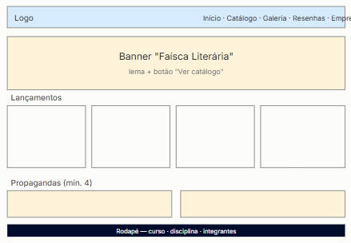
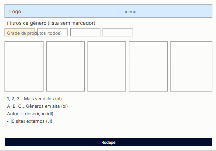
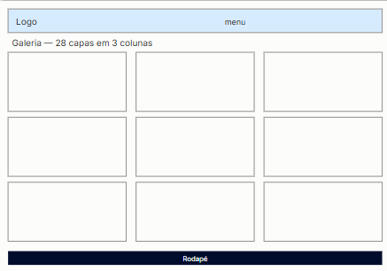
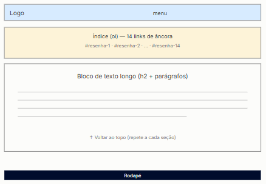
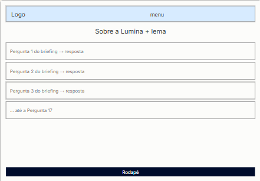
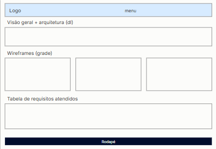
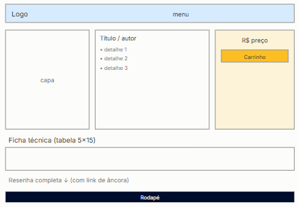

Logotipo
Versão completa (ícone + nome) e versão apenas do ícone, para espaços reduzidos.
Central técnica do site Lumina Livros: visão geral do projeto, arquitetura de arquivos, wireframes de todas as páginas e o mapeamento de cada requisito do Mini Projeto Front-End.
Lumina Livros é uma livraria e papelaria online desenvolvida como Mini Projeto da disciplina Desenvolvimento Web (Ciência da Computação, UniCEUB). O site foi construído inteiramente com HTML5, CSS3 e JavaScript puro — sem frameworks, bibliotecas externas ou back-end — conforme as restrições da disciplina.
Lema: "Lumina: Onde cada página acende uma ideia."
?id= na URL.produtos/, banners/ e editoras/.Esboços de baixa fidelidade das páginas do site.







Materiais de identidade visual prontos para uso em qualquer peça da Lumina — no site, em impressos ou em apresentações.
Versão completa (ícone + nome) e versão apenas do ícone, para espaços reduzidos.
Paleta de cores e tipografia oficiais, já em uso em todas as páginas do site.
Paleta de cores
#FFFDF8#0F172A#FBBF24#D97706Tipografia
Playfair Display — títulos (h1, h2)
Inter — corpo de texto (p)
Peça de uma página com apresentação da marca, pronta para impressão ou envio digital.
↓ Baixar folder (PDF)| Req. | Descrição | Onde está |
|---|---|---|
| 2 | Briefing de 17 questões | empresa.html |
| 3 | Menu com mínimo 5 itens | Cabeçalho, todas as páginas |
| 4 | Mín. 25 fotos, 3 colunas, mesmo tamanho | galeria.html (28 capas) |
| 5 | Fundo sem repetição de imagem | css/main.css (banner-inicial usa degradê, não imagem) |
| 6 | Texto longo com link de âncora (14 seções) | resenhas.html |
| 7 | Todos os tipos de lista (ol, ul, dl) + type | catalogo.html |
| 8 | Wireframes de todas as páginas | documento.html (esta página) |
| 9 | Formatos de texto (negrito, itálico, citação etc.) | resenhas.html / produto.html |
| 10 | 10 links para sites externos | catalogo.html |
| 11 | Mín. 4 propagandas de patrocinadores | homepage.html |
| 12 | Tabela 5×15 com mesclagens e cores | paginas-produtos/produto.html |
| 16 | CSS em todas as páginas + responsividade | css/main.css |
| 17 | JavaScript: eventos, filtros, DOM | js/*.js (catalogo.js, produto.js, homepage.js) |